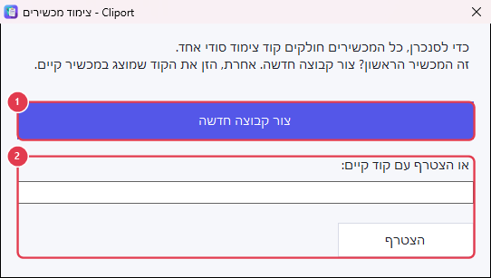
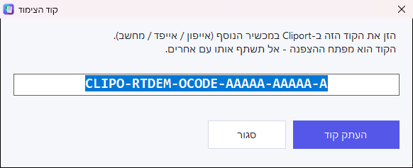
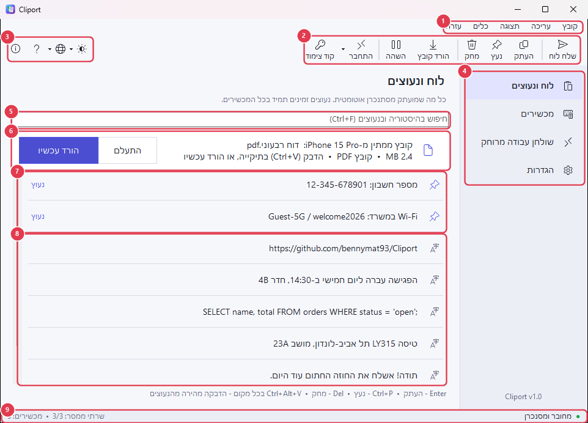
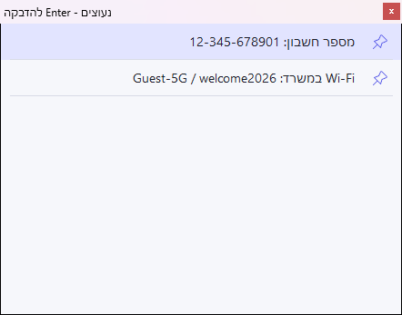
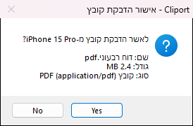
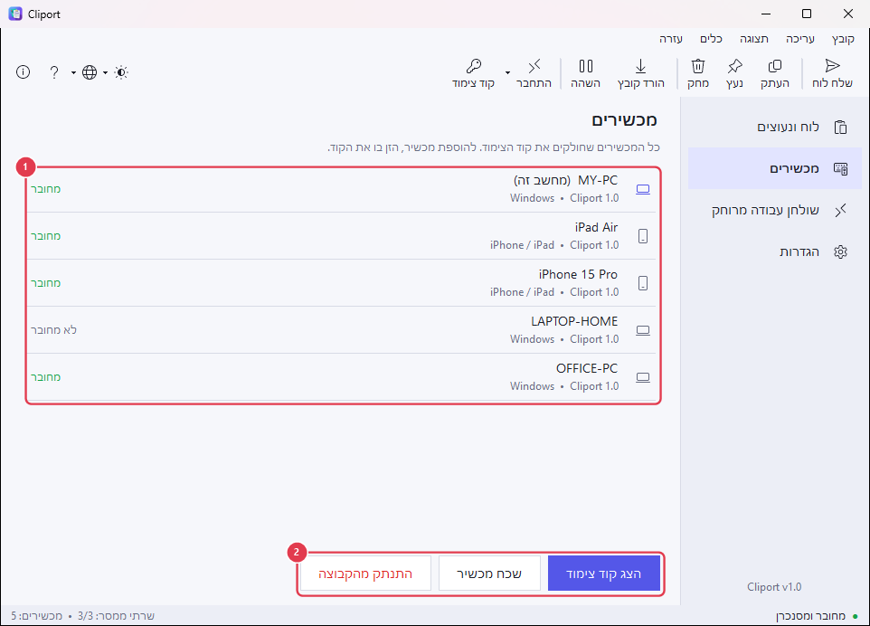
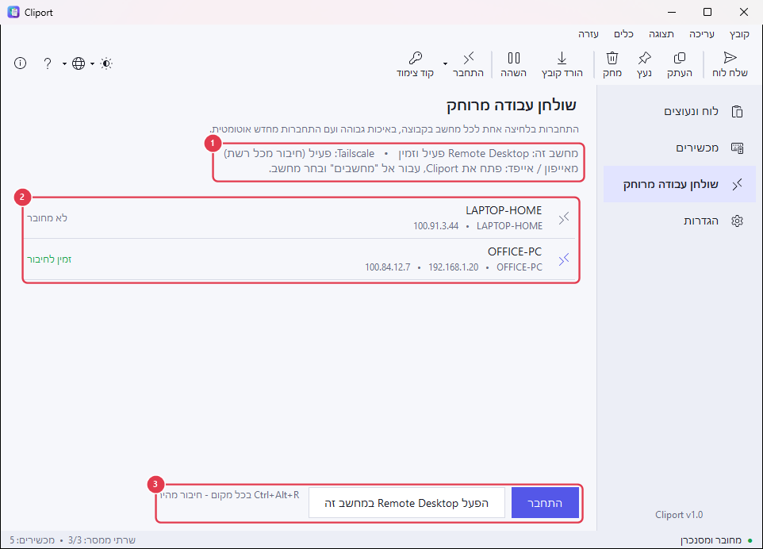
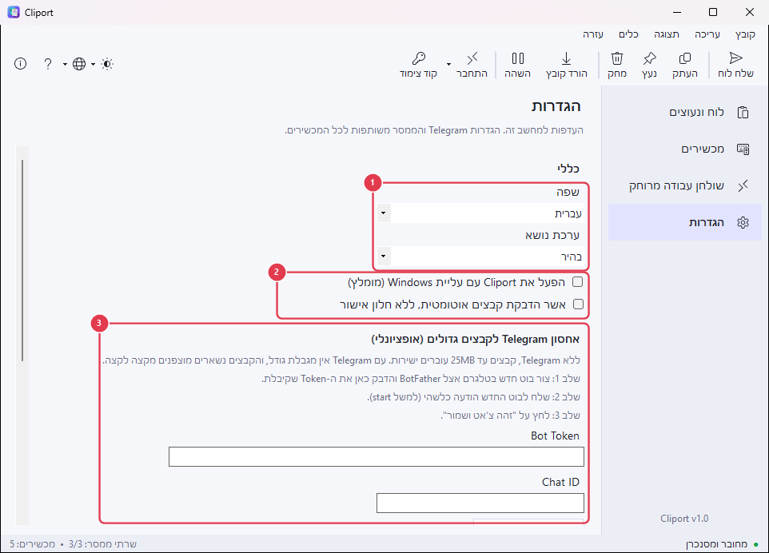
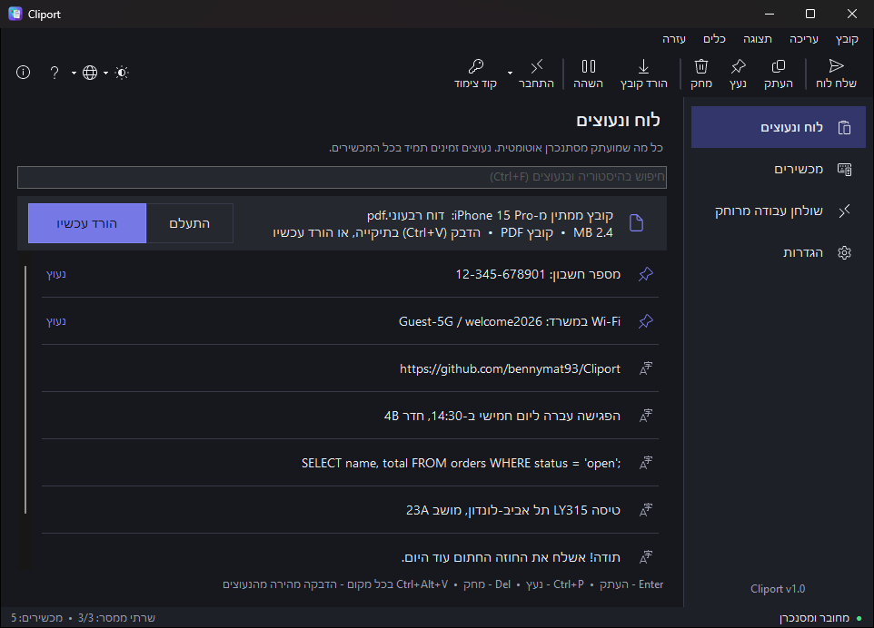

Cliport
לוח משותף בזמן אמת בין מחשבים, אייפון ואייפד
מדריך למשתמש · גרסה 1.0
תוכן העניינים
1. מה Cliport עושה
Cliport מחבר את הלוח (clipboard) של כל המכשירים שלך. מעתיקים במכשיר אחד, ומדביקים באחר, בלי שום פעולה נוספת.
- סנכרון בזמן אמת של טקסט ותמונות בין מחשבי Windows, אייפון ואייפד.
- עובד מכל רשת. המכשירים לא צריכים להיות באותה רשת; מספיק חיבור לאינטרנט.
- נעוצים: פריטים קבועים שזמינים תמיד בכל המכשירים.
- שיתוף קבצים: מעתיקים קובץ במכשיר אחד ומדביקים באחר, אחרי אישור.
- שולחן עבודה מרוחק: התחברות בלחיצה אחת לכל מחשב בקבוצה.
- הצפנה מקצה לקצה: רק המכשירים שלך יכולים לקרוא את התוכן.
2. התקנה וצימוד במחשב
אין צורך בהתקנה. מפעילים את הקובץ Cliport.exe, והתוכנה נשארת פעילה במגש המערכת (ליד השעון).

- צור קבוצה חדשה - במכשיר הראשון. נוצר קוד צימוד סודי של 26 תווים.
- הצטרף עם קוד קיים - בכל מכשיר נוסף. מזינים את הקוד שהוצג במכשיר הראשון ולוחצים "הצטרף".
אחרי הצימוד מוצג הקוד. שומרים אותו במקום בטוח: הוא משמש להוספת מכשירים, והוא גם מפתח ההצפנה.

3. החלון הראשי
פותחים את החלון בלחיצה כפולה על סמל Cliport במגש המערכת. סגירת החלון אינה עוצרת את הסנכרון.

- שורת התפריטים - קובץ, עריכה, תצוגה, כלים ועזרה. כל הפעולות זמינות כאן, עם קיצורי המקשים.
- סרגל הכלים - הפעולות הנפוצות: שליחת הלוח, העתקה, נעיצה, מחיקה, הורדת קובץ, השהיה, חיבור למחשב וקוד צימוד.
- תצוגה ועזרה - ערכת נושא, שפה, מדריך למשתמש ואודות.
- ניווט - מעבר בין ארבעת המסכים: לוח ונעוצים, מכשירים, שולחן עבודה מרוחק, הגדרות.
- חיפוש - סינון ההיסטוריה והנעוצים תוך כדי הקלדה.
- קובץ ממתין - מופיע כשמכשיר אחר העתיק קובץ. מציג שם, גודל וסוג.
- נעוצים - מוצגים תמיד בראש הרשימה.
- היסטוריה - הפריטים האחרונים שהועתקו בכל המכשירים.
- שורת המצב - מצב החיבור, מספר שרתי הממסר הפעילים ומספר המכשירים.
4. העתקה והדבקה בין מכשירים
אין מה ללמוד: מעתיקים כרגיל (Ctrl+C) במכשיר אחד, ומדביקים כרגיל (Ctrl+V) באחר. ההעתקה מגיעה לשאר המכשירים בתוך שנייה בערך.
- לחיצה כפולה על פריט ברשימה (או Enter) מעתיקה אותו שוב לכל המכשירים.
- הכפתור שלח לוח שולח מחדש את מה שנמצא כרגע בלוח.
- הכפתור השהה עוצר זמנית את הסנכרון, למשל לפני העתקת מידע רגיש.
- מידע שמנהלי סיסמאות מסמנים כפרטי אינו נשלח.
5. נעוצים
פריט נעוץ נשאר זמין בכל המכשירים עד שמבטלים את הנעיצה. מתאים לכתובות, מספרי חשבון, תשובות קבועות וכדומה.
- לנעיצה: בוחרים פריט ולוחצים נעץ (Ctrl+P). לחיצה נוספת מבטלת.
- להדבקה מהירה מכל תוכנה: Ctrl+Alt+V, בוחרים פריט ולוחצים Enter.

6. שיתוף קבצים
מעתיקים קובץ במכשיר אחד כרגיל. בשאר המכשירים מופיעה הודעה עם שם הקובץ, גודלו וסוגו. הקובץ עצמו אינו עובר עד שמאשרים.
- במחשב היעד פותחים תיקייה ולוחצים Ctrl+V.
- נפתח חלון אישור עם פרטי הקובץ.
- אחרי אישור הקובץ יורד ומודבק בתיקייה.

- אפשר גם ללחוץ הורד עכשיו בחלון הראשי, ואז להדביק בכל תוכנה.
- קבצים עד 25MB עוברים ישירות. לקבצים גדולים יותר מגדירים אחסון Telegram (ראה הגדרות).
- אם הרשת חלשה, חלקים שאבדו נשלחים שוב אוטומטית והקצב מותאם.
- המכשיר שממנו הועתק הקובץ צריך להיות מחובר בזמן ההדבקה.
7. מכשירים

- רשימת המכשירים - כל המכשירים בקבוצה ומצב החיבור של כל אחד.
- פעולות - הצגת קוד הצימוד להוספת מכשיר, הסרת מכשיר מהרשימה, או ניתוק המחשב הזה מהקבוצה.
8. שולחן עבודה מרוחק
Cliport מפרסם לקבוצה (בצורה מוצפנת) את הכתובות של כל מחשב, כך שאפשר להתחבר אליו בלחיצה אחת.

- מצב המחשב הזה - האם Remote Desktop פעיל, והאם Tailscale זוהה.
- מחשבים בקבוצה - לחיצה כפולה מתחברת. Cliport בוחר לבד את הכתובת הזמינה.
- פעולות - התחברות, והפעלת Remote Desktop במחשב הזה (דורש אישור מנהל ומהדורת Windows Pro).
- לחיבור מהיר מכל מקום: Ctrl+Alt+R.
- לחיבור בין רשתות שונות מתקינים Tailscale (חינם) בכל המכשירים ומתחברים לאותו חשבון.
- החיבור משתמש ב-Remote Desktop של Windows, באיכות מלאה ועם התחברות מחדש אוטומטית.
9. הגדרות, שפה וערכת נושא

- שפה וערכת נושא - עברית או אנגלית; בהיר, כהה, או "מכשיר" (לפי ההגדרה של Windows).
- הפעלה ואישור - הפעלה עם עליית Windows, ואישור אוטומטי של הדבקת קבצים.
- אחסון Telegram - אופציונלי, לקבצים מעל 25MB. מגדירים פעם אחת וההגדרה מופצת לכל המכשירים.

בהמשך המסך אפשר להגדיר שרת ממסר פרטי (MQTT על TLS). הוא מתווסף לשרתים הציבוריים ומשפר את הזמינות.
10. אייפון ואייפד
התקנה וצימוד
- מתקינים את הקובץ Cliport-v1.0-unsigned.ipa בכלי שבו אתה מתקין אפליקציות לא חתומות.
- פותחים את Cliport, מזינים את קוד הצימוד ולוחצים "הצטרף עם הקוד".
- מאשרים קבלת התראות.
מהמחשב אל המכשיר
אוטומטי. כשהאפשרות "השאר מחובר ברקע" פעילה, מה שמועתק במחשב נכנס ללוח של המכשיר.
מהמכשיר אל המחשב
iOS אינו מאפשר לאף אפליקציה לקרוא את הלוח ברקע. לכן יש שלוש דרכים:
- פתיחת Cliport שולחת את הלוח מיד.
- אוטומציה באפליקציית "קיצורים": אוטומציה חדשה, "יישום", "נסגר", "הפעל מיד". מוסיפים את הפעולה "קבל לוח" ואחריה "שלח טקסט לכל המכשירים" של Cliport. מעכשיו כל יציאה מיישום שולחת את הלוח.
- הקשה על גב המכשיר או כפתור הפעולה: מקצים להם קיצור עם אותן שתי פעולות.
קבצים
כשקובץ מוצע ממכשיר אחר מופיעה התראה עם שם, גודל וסוג. אחרי אישור הקובץ נכנס ללוח ונשמר גם באפליקציית "קבצים", בתיקיית Cliport.
שולחן עבודה מרוחק
בלשונית "מחשבים" בוחרים מחשב וכתובת. החיבור נפתח באפליקציית Windows App של מיקרוסופט (חינם ב-App Store).
שפה וערכת נושא
בלשונית "הגדרות", תחת "תצוגה": עברית או אנגלית; בהיר, מכשיר או כהה.
11. התאוששות מתקלות
Cliport מתקן את עצמו בדרגות. בכל דרגה מופיעה התראה.
| דרגה | מה קורה |
|---|---|
| 0 | חיבור שנפל מתחדש לבד, וחיבור תקוע מוחלף. בשינוי רשת ההתחברות מיידית. |
| 1 | אחרי קריסה או תקיעה התוכנה מופעלת מחדש אוטומטית. |
| 2 | בקריסות חוזרות המטמון וההיסטוריה מתאפסים. |
| 3 | ההגדרות נבנות מחדש. הצימוד נשמר. |
| 4 | מצב בטוח: סנכרון בסיסי בלבד, עד שהתקלה נפתרת. |
באייפון ובאייפד המערכת אינה מאפשרת הפעלה עצמית, ולכן אם האפליקציה נעצרה מופיעה התראה, והקשה עליה מחדשת את הסנכרון.
12. קיצורי מקשים
| קיצור | פעולה |
|---|---|
| Ctrl+Alt+V | הדבקה מהירה מהנעוצים (בכל תוכנה) |
| Ctrl+Alt+R | חיבור מהיר לשולחן עבודה מרוחק (בכל תוכנה) |
| Enter | העתקת הפריט הנבחר לכל המכשירים |
| Ctrl+P | נעיצה / ביטול נעיצה |
| Del | מחיקה מההיסטוריה |
| Ctrl+F | חיפוש |
| Ctrl+Shift+V | שליחת הלוח עכשיו |
| Ctrl+D | הורדת הקובץ הממתין |
| Ctrl+K | הצגת קוד הצימוד |
| Ctrl+1 עד Ctrl+4 | מעבר בין המסכים |
| F1 | המדריך הזה |
13. פרטיות ואבטחה
- כל התוכן מוצפן במכשיר לפני השליחה (AES-256) ומאומת (HMAC-SHA256). שרתי הממסר רואים רק מידע מוצפן.
- קוד הצימוד הוא מפתח ההצפנה. מי שמחזיק בו יכול להצטרף לקבוצה, ולכן לא משתפים אותו.
- במחשב, הקוד, ההיסטוריה והנעוצים נשמרים מוצפנים בחשבון המשתמש של Windows.
- אם הקוד נחשף: מתנתקים מהקבוצה בכל המכשירים ויוצרים קבוצה חדשה.
14. פתרון בעיות
| תופעה | מה לבדוק |
|---|---|
| ההעתקה לא מגיעה למכשיר אחר | שורת המצב מציגה "מחובר ומסנכרן" בשני המכשירים? הסנכרון אינו מושהה? בשני המכשירים אותו קוד צימוד? |
| "מתחבר מחדש..." לאורך זמן | יש חיבור לאינטרנט? רשתות ארגוניות חוסמות לפעמים את יציאה 8883; במקרה כזה מגדירים שרת ממסר פרטי. |
| הדבקת קובץ לא עובדת | המכשיר המקורי מחובר? הקובץ קטן מ-25MB, או שאחסון Telegram מוגדר? |
| אי אפשר להתחבר לשולחן עבודה מרוחק | Remote Desktop מופעל במחשב היעד? Tailscale פעיל בשני הצדדים? |
| העתקה באייפון לא נשלחת | פותחים את Cliport, או מגדירים את האוטומציה שבסעיף 10. |
יומן הפעילות נמצא בתיקיית הנתונים (תפריט "כלים", "פתח את תיקיית הנתונים והיומן").
דף הפרויקט: github.com/bennymat93/Cliport